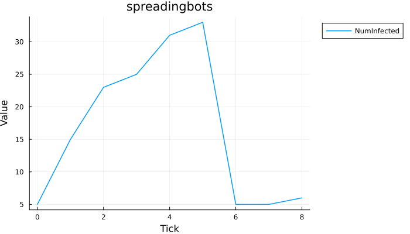
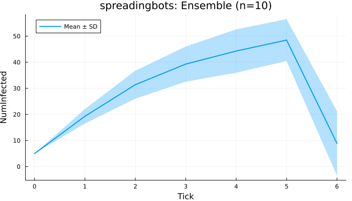
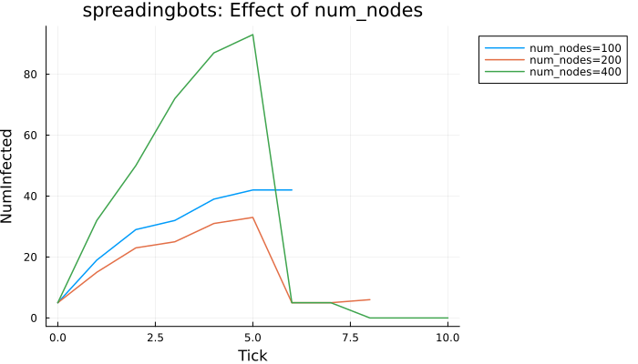

Spreading Bots
Overview
This vignette demonstrates the Spreading Bots model implemented in ArkModelZoo.jl using the Ark.jl ECS framework.
Parameters
| Parameter | Type | Default | Description |
|---|---|---|---|
num_nodes | Int | 200 | num nodes |
m | Int | 2 | m |
p | Float64 | 0.11 | p |
gamma | Float64 | 0.5 | gamma |
num_infected_init | Int | 5 | num infected init |
reinfect_type | String | "eigenval-centrality" | reinfect type |
bot_group_repet | Int | 2 | bot group repet |
bot_group_percent | Int | 5 | bot group percent |
retention_loss | Bool | true | retention loss |
size_reduction | Float64 | 1.5 | size reduction |
max_ticks | Int | 100 | max ticks |
Source Code
The Julia code to run this model:
using ArkModelZoo
_, trajectory = run_spreadingbots()Time Series

Ensemble Runs
Ten replicates with different random seeds, showing mean ± standard deviation.

Parameter Sensitivity
Varying num_nodes.

Appendix: Source Code
This model is implemented in the Ark.jl Entity-Component-System (ECS) framework. The code is split into five files, each with a distinct role:
- Parameters: a mutable struct holding all configurable values.
- Components: lightweight data types attached to individual entities (agents).
- Resources: world-level shared state accessible to all systems.
- Systems: functions that operate on entities each tick, defining model behavior.
- Model: wiring that assembles the world, registers resources and systems, and provides the run entry point.
Parameters (parameters.jl)
The parameter struct uses @kwdef so that every field has a default value and can be overridden by keyword. These defaults match the original NetLogo model’s slider settings.
Base.@kwdef mutable struct SBotParams
num_nodes::Int = 200
m::Int = 2
p::Float64 = 0.11
gamma::Float64 = 0.5
num_infected_init::Int = 5
reinfect_type::String = "eigenval-centrality"
bot_group_repet::Int = 2
bot_group_percent::Int = 5
retention_loss::Bool = true
size_reduction::Float64 = 1.5
max_ticks::Int = 100
seed::Int = 42
endComponents (components.jl)
Components are lightweight data types attached to individual entities (agents). Mutable structs hold per-entity state, while empty tag structs act as markers for the ECS query system to efficiently filter entities.
struct SBotDummy endResources (resources.jl)
Resources are world-level singletons shared across all systems, used for global state and aggregate statistics.
mutable struct SBotNetwork
n_agents::Int
adj::Vector{Set{Int}}
infected::Vector{Bool}
agent_size::Vector{Float64}
is_bot::Vector{Bool}
degrees_bag::Vector{Int} # degree list for preferential attachment
end
function SBotNetwork()
SBotNetwork(0, Set{Int}[], Bool[], Float64[], Bool[], Int[])
end
function _sbot_add_agent!(net::SBotNetwork)
push!(net.adj, Set{Int}())
push!(net.infected, false)
push!(net.agent_size, 0.5)
push!(net.is_bot, false)
net.n_agents += 1
return net.n_agents
end
function _sbot_add_edge!(net::SBotNetwork, i::Int, j::Int)
if i != j && j ∉ net.adj[i]
push!(net.adj[i], j)
push!(net.adj[j], i)
push!(net.degrees_bag, i)
push!(net.degrees_bag, j)
end
end
mutable struct SBotStats
num_infected::Int
previous_num_infected::Int
end
SBotStats() = SBotStats(0, 0)Systems (systems.jl)
Systems contain the model logic and execute in a defined order each tick. Each system struct implements either initialize! (run once at setup) or update! (run every tick).
# Spreading Bots — Bot-augmented epidemic diffusion on preferential-attachment network
struct InitSBotSystem <: System end
function _sbot_find_partner(net::SBotNetwork, rng, node::Int, gamma::Float64)
while true
if rand(rng) >= gamma && !isempty(net.degrees_bag)
partner = net.degrees_bag[rand(rng, 1:length(net.degrees_bag))]
else
partner = rand(rng, 1:net.n_agents)
end
if partner != node && partner ∉ net.adj[node]
return partner
end
end
end
function initialize!(::InitSBotSystem, world::World)
params = get_resource(world, SBotParams)
rng = get_resource(world, RNGResource).rng
net = get_resource(world, SBotNetwork)
stats = get_resource(world, SBotStats)
# Create initial ring of 5 nodes
for _ in 1:5
_sbot_add_agent!(net)
end
for i in 1:4
_sbot_add_edge!(net, i, i + 1)
end
_sbot_add_edge!(net, 5, 1)
# First half of preferential attachment growth
half1 = div(params.num_nodes, 2)
for _ in 1:half1
id = _sbot_add_agent!(net)
for _ in 1:params.m
partner = _sbot_find_partner(net, rng, id, params.gamma)
_sbot_add_edge!(net, id, partner)
end
end
# Set bot group
n_bots = max(1, div(net.n_agents * params.bot_group_percent, 100))
bot_indices = shuffle!(rng, collect(1:net.n_agents))[1:n_bots]
for i in bot_indices
net.is_bot[i] = true
end
# Create bot-internal edges
for _ in 1:params.bot_group_repet
for i in bot_indices
j = bot_indices[rand(rng, 1:length(bot_indices))]
if i != j
_sbot_add_edge!(net, i, j)
end
end
end
# Second half of preferential attachment growth
half2 = div(params.num_nodes, 2) - 4
for _ in 1:half2
id = _sbot_add_agent!(net)
for _ in 1:params.m
partner = _sbot_find_partner(net, rng, id, params.gamma)
_sbot_add_edge!(net, id, partner)
end
end
# Seed initial infected using reinfect strategy
_sbot_reinfect!(net, rng, params, stats)
return nothing
end
function _sbot_reinfect!(net::SBotNetwork, rng, params::SBotParams, stats::SBotStats)
for i in 1:net.n_agents
net.infected[i] = false
net.agent_size[i] = 1.0
end
stats.num_infected = params.num_infected_init
stats.previous_num_infected = 0
n_to_infect = min(params.num_infected_init, net.n_agents)
if params.reinfect_type == "random"
chosen = shuffle!(rng, collect(1:net.n_agents))[1:n_to_infect]
for i in chosen
net.infected[i] = true
net.agent_size[i] = 2.0
end
elseif params.reinfect_type == "group"
bot_ids = findall(net.is_bot)
chosen = shuffle!(rng, copy(bot_ids))[1:min(n_to_infect, length(bot_ids))]
for i in chosen
net.infected[i] = true
net.agent_size[i] = 2.0
end
elseif params.reinfect_type == "eigenval-centrality"
ec = nw_eigenvector_centrality(NwGraph(net.n_agents, net.adj))
sorted = sortperm(ec; rev=true)
for k in 1:n_to_infect
i = sorted[k]
net.infected[i] = true
net.agent_size[i] = 2.0
end
elseif params.reinfect_type == "PageRank-Centrality"
pr = nw_page_rank(NwGraph(net.n_agents, net.adj))
sorted = sortperm(pr; rev=true)
for k in 1:n_to_infect
i = sorted[k]
net.infected[i] = true
net.agent_size[i] = 2.0
end
end
end
struct SBotGoSystem <: System end
function update!(::SBotGoSystem, world::World)
params = get_resource(world, SBotParams)
rng = get_resource(world, RNGResource).rng
net = get_resource(world, SBotNetwork)
stats = get_resource(world, SBotStats)
# Check if all infected
if all(net.infected)
get_resource(world, Terminate).stop = true
return nothing
end
# ask turtles with [infected? = true] — shuffle infected
infected_ids = findall(net.infected)
shuffle!(rng, infected_ids)
for i in infected_ids
mysize = net.agent_size[i]
# ask link-neighbors with [infected? = false] — shuffle
susceptible_nbrs = [j for j in net.adj[i] if !net.infected[j]]
shuffle!(rng, susceptible_nbrs)
for j in susceptible_nbrs
prob = params.retention_loss ? params.p * mysize : params.p
if rand(rng) <= prob
net.infected[j] = true
stats.num_infected += 1
end
end
end
# Check stagnation
current_infected = count(net.infected)
if current_infected == stats.previous_num_infected
get_resource(world, Terminate).stop = true
return nothing
end
stats.previous_num_infected = current_infected
# Size reduction for all agents
for i in 1:net.n_agents
net.agent_size[i] /= params.size_reduction
if net.agent_size[i] < 0.1
net.infected[i] = false
end
end
stats.num_infected = count(net.infected)
return nothing
end
struct SBotTerminationSystem <: System end
function update!(::SBotTerminationSystem, world::World)
params = get_resource(world, SBotParams)
tick = get_resource(world, Tick)
if tick.tick + 1 >= params.max_ticks
get_resource(world, Terminate).stop = true
end
return nothing
endModel (model.jl)
The model file assembles all pieces: it creates the ECS World with the required component types, registers resources, builds the Scheduler with systems in execution order, and exposes the public run entry point. The observer pattern records the trajectory each tick.
function spreadingbots_world(; initial_capacity::Int = 128)
return World(SBotDummy; initial_capacity = initial_capacity, allow_mutable = true)
end
function spreadingbots_systems()
return (InitSBotSystem(), SBotGoSystem(), SBotTerminationSystem())
end
function spreadingbots_model(params::SBotParams = SBotParams())
world = spreadingbots_world()
_add_standard_resources!(world, params)
add_resource!(world, SBotNetwork())
add_resource!(world, SBotStats())
scheduler = Scheduler(world, spreadingbots_systems())
initialize!(scheduler)
return scheduler
end
struct SBotObserver end
function spreadingbots_headers(::SBotObserver)
return ["NumInfected"]
end
function spreadingbots_values(::SBotObserver, world::World)
stats = get_resource(world, SBotStats)
return Float64[stats.num_infected]
end
function run_spreadingbots(; params::SBotParams = SBotParams(), observe::Bool = true)
return _run_model(spreadingbots_model, SBotObserver(), spreadingbots_values; params, observe)
end